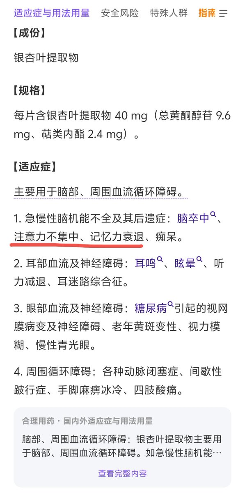

🍀🍥竹蜻蜓🍥🍀
@zqtlovekris99
@OverSpeed_Wiki 吃过这个按处方量连着吃一周多感觉没啥效果，他可能是那种长期吃才能有效的，短效的来的快走的快的还是安非他酮好使😇

OverSpeed Wiki
@OverSpeed_Wiki
【调查】
🇦🇺银杏叶提取物有人感兴趣吗
含有银杏内酯（Ginkgolide）、白果内酯（Bilobalide）等成分，属于益智药，可改善注意力和记忆力
规格与国产相同，都是每片40mg，价格比国产更便宜，1瓶100片，换算成人民币相同价格国产只能买40片左右
如果有需要可以私信，人多我就采购，人少就算了 https://t.co/CD2AH1SZIG